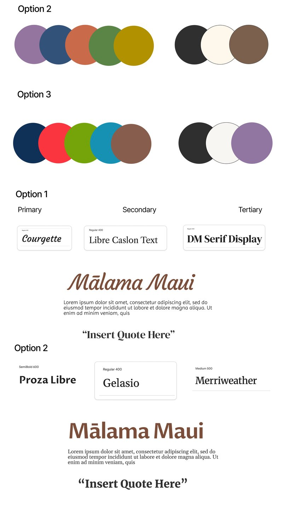
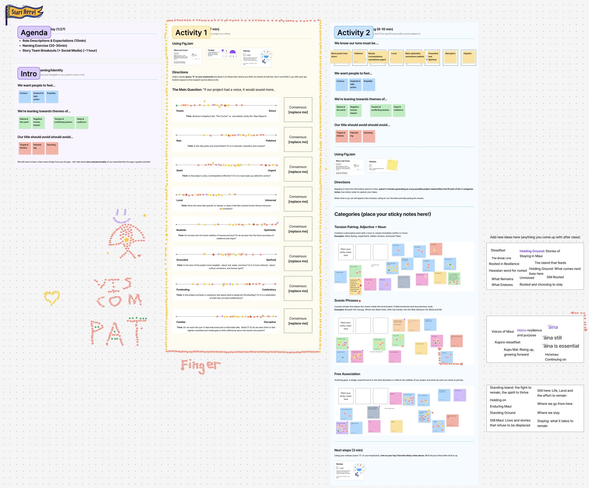

The project
The Mālama Maui Project is an international storytelling project: journalists, photographers, videographers, and web designers working together to build a platform that brings attention to what people on Maui are living with right now: from an invasive deer population that’s devastating the island’s natural landscape to the ongoing displacement of a whole community after the 2023 Lahaina wildfire. The stories, organized into ecology, the ocean, resilience, food, and culture, also trace the economic pressures, like gentrification, that run through all of them. This year’s focus was Maui because so much was happening there that needed to be told.
I interviewed for the Lead Designer role and was hired by the project’s design and development manager. He oversaw both the design and development teams, each with its own lead. I led the design side.
Leading the design team
I led a team of three other designers. With my manager’s help, I broke the work into smaller pieces, tracked it in Jira, and delegated it.
I ran discovery brainstorming sessions where we looked at what other storytelling sites did well and what they didn’t, and decided how we wanted our site to look and what mattered most. Each designer then owned one part of the work: the components and layout, the style guide, or the high-fidelity mockups. We all worked on everything together, but each part had someone in charge of it. I owned the research.
My leadership was mostly support: helping where it was needed and staying out of the way when people were doing well. I learned from them along the way too.
The style guide
I set up a shared mood board where the whole team added photos and inspiration images. Then I suggested using a tool that pulls color palettes from images, so our colors would come straight from that imagery. The teammate who owned the style guide refined the colors, built the formal style guide, and offered font options, which we chose as a team. We then pitched it to the reporting team.

Finding the name
The project had an unusual constraint: we had to build the platform while the reporters were still gathering their stories. To talk about the project with the people we were working with, we needed some things settled early, starting with a name. That turned out to be harder than it sounds.
I started with a FigJam brainstorm open to the whole group of about 30 people. Everyone could mark the tone they wanted the project to have, what to steer clear of, and their name ideas.

Testing the names
I tested names with people from Hawaiʻi and long-term residents on UserTesting.com, in three rounds: 4 names with 7 participants, then 3 names with 3 participants, then 3 names with 6 participants. In the first round, I split participants into two groups that saw the names in different orders, so the order couldn’t sway their answers. Between rounds, I brought the findings back to the team, reopened the brainstorm, and refined the list.
Our UserTesting plan came with a limited number of participants for the whole project, so I used them sparingly to keep some for questions that came up later.
In the final round, one participant mentioned a phrase that everyone in Hawaiʻi knows, because they say it every day in school: Mālama Maui, which means “take care of Maui.”
It covered much of what the team wanted. It’s recognizably Hawaiian without sounding like tourism or colonialism, and participants were glad to see their language used, as long as it was used well. We paired it with a tagline, The Land We Hold, a title we had tested on its own that also landed well. When I brought this back to the team, the choice was clear.
What the research changed
The naming research did more than give us a name. It set the tone for how careful and respectful we needed to be with people who have experienced loss and gentrification again and again, and who see taking care of the land as their responsibility, even as it’s being taken from them.
It shaped how our team used the Hawaiian language, and it helped shape how reporters titled their own stories. It also gave the team a cultural primer before we traveled to Maui.
Settling the hero video question
A few teammates wanted a video at the top of the home page. Others thought it would overwhelm visitors, since it would be the first thing they saw. Rather than decide by debate, I tested the idea with 4 participants. Our own video wasn’t made yet, so I used a hero video from another site the team liked as a stand-in. I structured the test so participants came across the video without knowing it was what I was asking about. All 4 spoke positively about it, so we decided to use a hero video, as long as ours followed the tone of the one we tested and didn’t move too fast.
Graphics for the stories
The developers preferred Flourish for graphs, timelines, and animated maps, and not everyone on the team knew how to use it. I made some of the graphics that support the stories and helped teammates with theirs.
Seeing it through
Near the end, development ran into problems with parts of our design, the deadline ran long, and the rest of the team had moved on. The development lead and I stayed to work through the remaining gaps and mistakes.
What I’d do next
- Test the finished site with the UserTesting participants we had left. By the time the site was finished, we were already well past the deadline, so there wasn’t time.